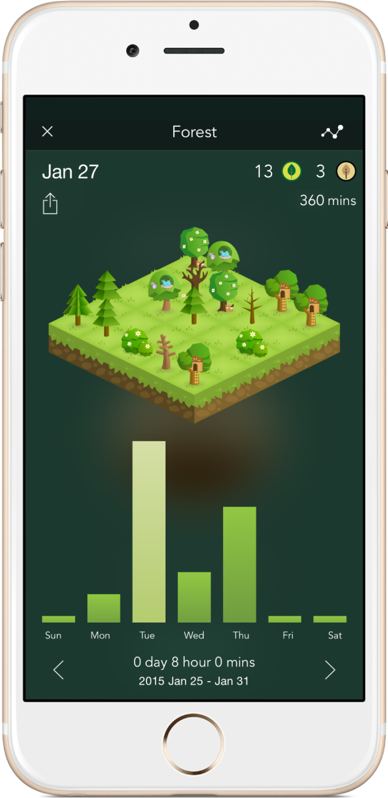

UXpert
Building a prototype of my branded online learning platform, used to teach people about User Experience design.
Visit Prototype

Taking into account all the elements that Monzo offer, plus many more, I want to be achieving a similar level of innovation and great UX when it comes to the ideation and design of my UX school. The Big Hairy Audacious Goal is to create the Monzo of UX education, producing an idea that would over shadow all competitive platforms teaching UX so that my idea would be the best in the industry.
Quality Control: Skillshare and Udemy allow a range of different designers to upload content for students, and due to low entry barriers this won’t always ensure that the content provided is of a high standard. For this reason, students could spend a lot of time sieving through content or learning useless information. This can also make it difficult to learn when jumping between different tutors who likely follow different teaching styles, methods and tools.
Low Interactivity: Often offering little to no student support from the likes of a tutor, without this interactivity for problem solving or feedback your learning experience is surely limited.
Cost: The cost of learning varied anything from offering free services to paying £10,000. The more expensive option would perhaps suggest higher quality content however it’s impossible to identify the quality of the course based on solely it’s price. And do all students have that kind of money spare to invest?
Certification: Not always was a incentive offered in terms of a qualification or even an achievement scheme. Am I building an alternative to traditional University courses were they would receive a formal degree or am I building an addition to University, a space were students can gain access to further learning.
Little sense of Community: Learning online is often learning alone, there isn’t a sense of a classroom with fellow learning students. Some platforms such as CodeAcademy offer community forums with the idea that students would talk and ask questions amongst themselves. However this idea often fails when it is a forum of crazy large numbers.
Strong Branding: FutureLearn and Thinkful focused on brand colour consistency and small iconography, which improves the aesthetics of the overall site - you wouldn’t want to be learning design from a website that follows bad design as this would only suggest what the content provided is like.
Profile Dashboard: FutureLearn and Code Academy provide a dashboard for each student to keep track of what they are currently learning and have previously learnt. This idea could be further developed so that using data it could measure a student’s engagement with particular courses - the likes of a progression tab would visually keep track of their learning.
Recommendations: Code Academy provided a questionnaire to students once they sign up so that their recommendations list would be personalised to them.
Downloadable Options: Udemy offer content in the form of videos which with the click of a button can be downloaded for watching offline or at a different time.
Add to Wishlist: FutureLearn offer an ‘add to wishlist’ option that bookmarks a course you are interested to save for later.
Projects: A number of platforms provide projects and exercises for students to carry out if they want after learning the content. I believe that this is a must as learning design is only really taught by doing, you learn with every piece of design you create. Skillshare encourage you to post your projects in a social media like form receiving likes and comments from other students. A good way of receiving feedback from fellow students and a tutor.
Gamification: Codeacademy provide gamification through achievable badges which is a good idea for keeping students intrigued and using their service.
Daily Notifications: Duolingo use streaks to encourage students to daily return and learn and therefore achieving goals.
However building an addition to traditional university learning. I could offer free learning materials, encouraging students to use my service. And although there won’t be the opportunity to receive a recognised qualification, building on my last point I think there should be the opportunity for hard working students to upgrade. Something similar to the likes of reaching certain goals allows you to unlock content or perhaps a more gamification aspect were with every module you complete you receive a number of points which can be traded in to receive extra materials. So that it’s not always the students who can afford to unlock content but the motivated and hard working students that can earn their learning.
I believe building an addition would attract motivated students as they already want to learn more than the baseline they currently are and therefore focusing on developing these eager to learn students.
Online learning can be very distracting when there are so many more interesting things to find on the internet, therefore introducing this concept was very intriguing to me. I came up with a similar idea, using a pattern that can grow as you develop rather than a tree that grows.

This project also introduced me to prototyping, previously I had used Invision however for my UXpert platform I chose to look at Adobe XD. Exploring their variety of helpful tools, I especially grew to love the ‘auto animate’ feature. I was opened to the importance of prototyping for the purpose of iteration - work can be easily tested and changed along the developing process before you reach your final designs and therefore smoothing out the building process at the end.
I am pleased with the outcome of UXpert as I believe I have improved on the 3 main problems of online learning platforms - providing better structured content, on-demand student support and especially motivating students when learning online. Along with numerous added value features such as bookmarks, downloaded content, recommendations and so on that would improve a users overall experience.